Kids
Youth Judo
Confidence, discipline, and safe falling — taught through games and technique in a structured, respectful dojo.
| Tue – Thu | 6:00 – 7:00 PM |
|---|
Matthews, North Carolina · Est. tradition, modern dojo
Physical exercise, mental training, and life skills that last — for kids and adults. We educate, inspire, and connect judoka throughout the Carolinas.
Programs & schedule
Walk in during any class — your first session is free and we'll lend you a uniform.
Confidence, discipline, and safe falling — taught through games and technique in a structured, respectful dojo.
| Tue – Thu | 6:00 – 7:00 PM |
|---|
From first breakfall to shiai competition — recreational and competitive training for every level, five days a week.
| Mon – Thu | 7:00 – 8:30 PM |
|---|---|
| Saturday | 12:00 – 1:30 PM |
Free study tool
Our free flashcards app covers the full Gokyo no Waza and the preserved Habukareta Waza — animated demonstrations, quizzes, spaced repetition, and a typed-answer mode that forgives your spelling — plus a glossary of the judo vocabulary every student needs: commands and etiquette, breakfalls, stances and footwork, the words every throw's name is built from, and contest scoring. It works offline and installs to your phone like a native app.
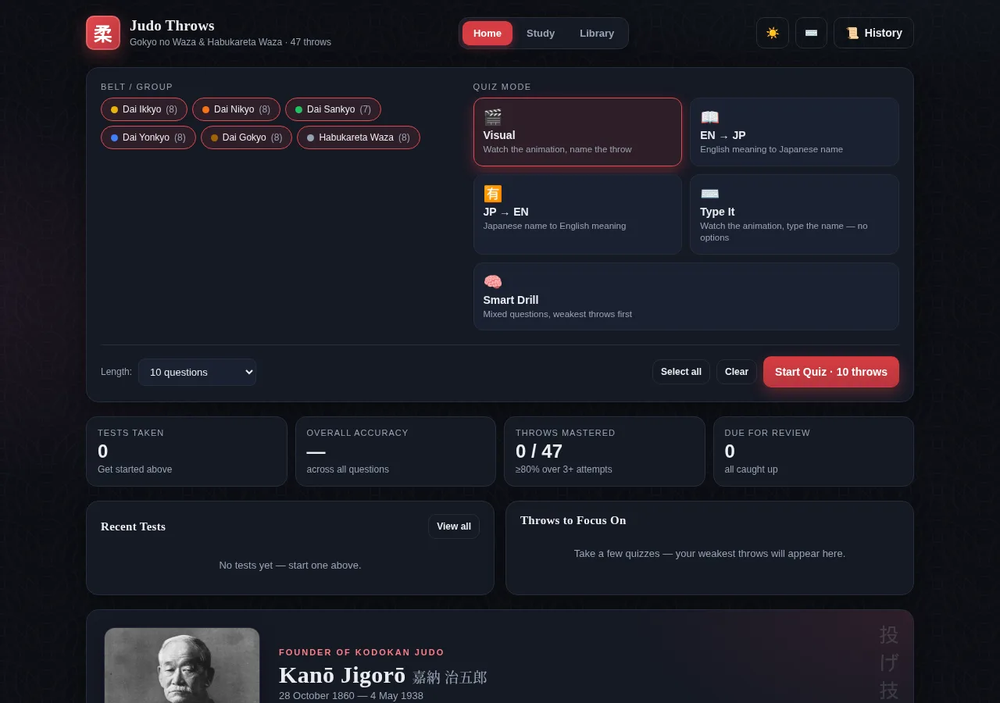
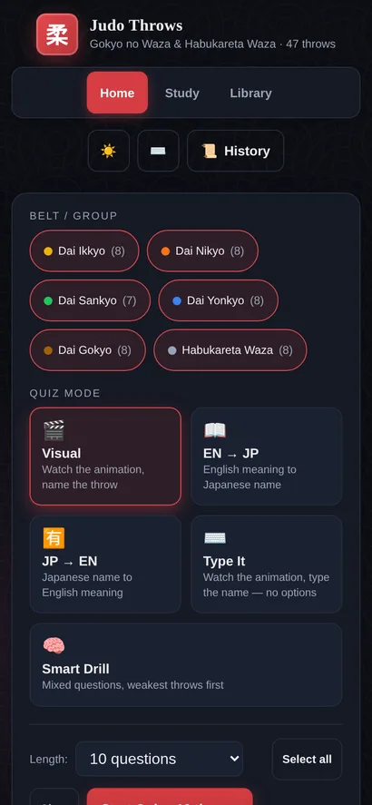
Mat-side arcade · 一本
A silly little judo game to pass the time between classes. Hold to break uke's balance, release in the glowing zone, and see how far you can send them flying. Earn your belt one ippon at a time — no ukemi required.
Best with sound on · plays great on your phone, too
Dojo etiquette · 礼儀
Judo begins and ends with respect. New to the dojo? These five habits cover almost everything.
Bow when entering or leaving the dojo, every time you step on or off the tatami — on with the left foot, off with the right — and before and after every partner drill or randori. A standing bow (ritsurei) is a straight-backed 30°, never rushed.
Wash your judogi after every session, keep it free of rips, and tie your belt properly. A cared-for uniform shows consideration for every partner who grips it.
Be changed and ready before class starts. Nails trimmed short, long hair tied back with a soft band, all jewelry off — rings, necklaces, earrings, watches. Your partners' safety depends on it.
No shoes, phones, food, or drinks on the tatami — and no bare feet off it. Sit in seiza or cross-legged when not training. Running late? Wait at the mat's edge, raise your hand, and join when Sensei invites you on.
Address the instructor as Sensei and senior students with courtesy. Watch how the senior grades conduct themselves — that's the fastest way to learn the culture.
Kanō Jigorō taught judo as a dō — a path of physical, intellectual, and moral growth. Pick one etiquette habit each session, practice it deliberately, and carry it beyond the dojo.
Highest rank on the right, lowest on the left. When the class kneels in seiza or rises, wait for the senior grades to move first.
Hear the dojo commandsJudo basics · 基本
How techniques are organized, how a throw works, and how a match is scored — the groundwork every new judoka builds on.
投技 · Nage-waza
固技 · Katame-waza
基本 · Kihon
Watch the breakfalls: back side front forward roll side roll
Four ways to score
Learn a couple of dozen words and most technique names translate themselves.
Drill them as flashcardsAdapted from Sensei Sami's Basics of Judo class notes. Video links open on YouTube.
Belt ranks · 段級位
Judo progresses through the kyu (student) grades, then ten dan (black-belt) grades. Every belt on this wall is earned on the mat — the last two are earned over a lifetime.
Senior progression shown — junior programs add in-between belts along the way.
CAJA is a member club of the American Traditional Jujutsu Association (ATJA), which publishes the judo curriculum, exams, and promotion forms.
Your teachers
A deep bench of dan-grade coaches — from first-lesson fundamentals to national-level refereeing and kata.
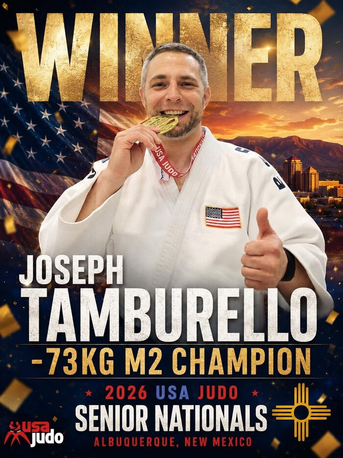
Community spotlight
−73kg M2 Champion at the 2026 USA Judo Senior Nationals in Albuquerque, New Mexico. 🥇
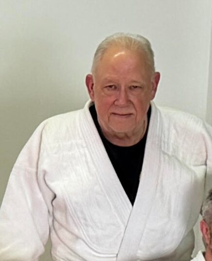
8th Dan · Head Coach
On the mat since 1957, with competitive years across the U.S. and three in Europe. National Referee and Kata Instructor, leading CAJA's 150-plus members.
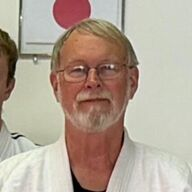
6th Dan
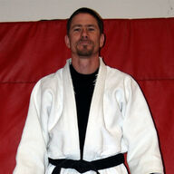
4th Dan
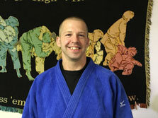
4th Dan
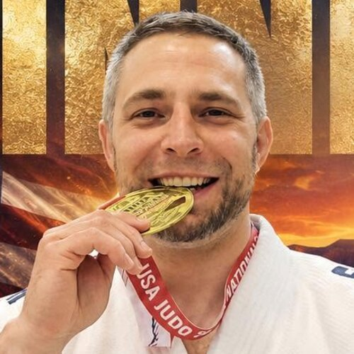
5th Dan
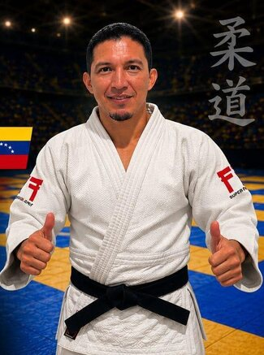
4th Dan
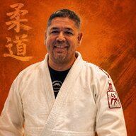
5th Dan
2nd Dan
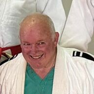
4th Dan
1st Dan
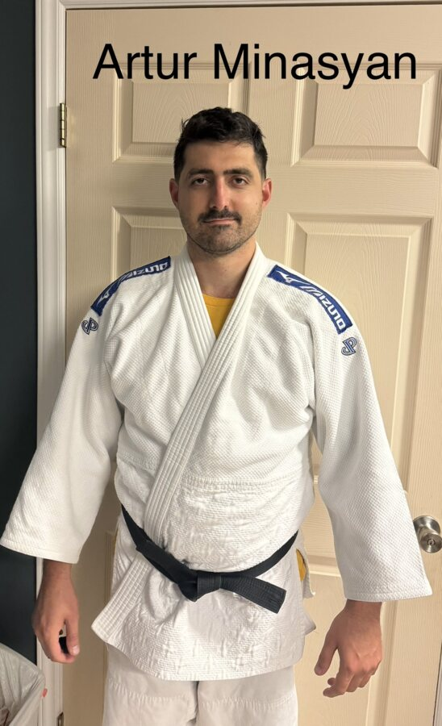
1st Dan
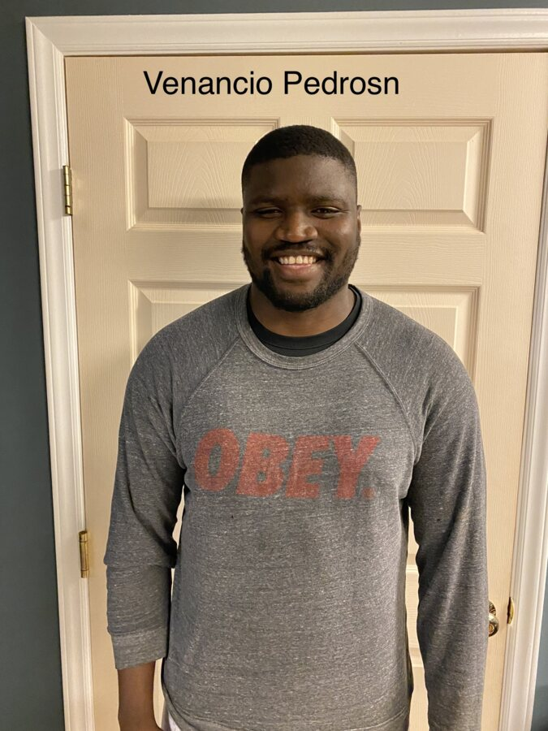
1st Dan
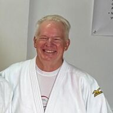
5th Dan
4th Dan
8th Dan
1st Dan
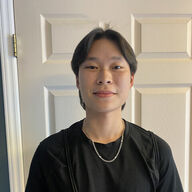
Ikkyu
Sankyu
Yonkyu
Full bios coming for everyone as we build out the new site.
About CAJA
Carolina's American Judo Association sits in Matthews, North Carolina — between the two Carolinas we serve. Our mission is simple: educate, inspire, and connect judoka throughout the Carolinas, whether they step on the mat to compete, to get fit, or to find a second family.
“Maximum efficiency with minimum effort. Mutual welfare and benefit.” — Kanō Jigorō, founder of Kodokan Judo · 精力善用 · 自他共栄
Hosted here in Matthews, NC
Three days. 20+ hours of training across judo, jujitsu, aikido, and karate — headlined by two-time Olympian Javier Guédez. Families train together: adults on the mats, kids ages 4–12 in a dedicated Kids' Zone with pool parties, movies, and themed nights. Catered meals and a camp t-shirt included. All organizations welcome.
Beyond this dojo
CAJA trains alongside sister clubs across the Carolinas — plus the calendar that keeps it all straight.
Come train with us
No experience needed, no gear needed — we provide a temporary uniform. Just show up a few minutes early and say hello.